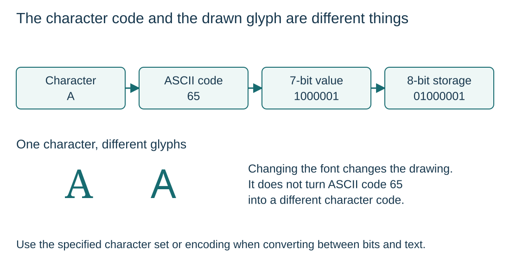

Character sets and internal binary representation
Visual overview
The character code and the drawn glyph are different things

Visual transcript
- ASCII assigns uppercase A the decimal code 65, represented in 7 bits as 1000001.
- An 8-bit storage representation with leading zero is 01000001. The leading zero does not change the value.
- A font controls the shape drawn for A; the agreed encoding controls the interpretation of the bits.
Follow meaning through to a visible glyph
A character is an abstract item such as A, 5 or a space. A character set identifies the available characters; a coded character set assigns numeric codes to them. An encoding specifies how these codes are stored as bits or bytes. A font supplies the visible glyph shapes when the text is drawn.
Worked round trip: A5 followed by a space
| Character | Supplied ASCII code | Seven-bit code | Eight-bit storage with a leading zero |
|---|---|---|---|
| A | 65 | 1000001 | 01000001 |
| 5 | 53 | 0110101 | 00110101 |
| space | 32 | 0100000 | 00100000 |
Encode, store and decode in order
- Encode: Look up A, 5 and space in that order. With one byte per character the file contains 01000001 00110101 00100000.
- Separate stored units: The reader uses the agreed one-byte convention to obtain codes 65, 53 and 32.
- Decode: The same ASCII mapping recovers A, then 5, then the space. Changing the order or dropping the space changes the text.
- Display: The selected font draws the recovered characters. Changing the font changes their shapes without requiring different ASCII codes.
Distinguish a digit character from a number
The numeric integer 5 stored as an unsigned byte is 00000101. The character “5” under ASCII is code 53, stored here as 00110101. Arithmetic on a numeric value and displaying a digit character are different uses of data. Lesson 058 revisits this distinction when selecting data types.
State the decoding requirement
A code has meaning only under an agreed mapping and encoding. A bit sequence alone cannot identify the intended text. In these exercises all required codes are supplied; learn the method rather than a table of memorised codes.
Core explanation · Exam essentials
- A character maps to a numeric code, then an encoding stores the code as bits or bytes.
- Decode using the agreed mapping, storage boundaries and original order.
- A glyph is a drawn shape; a digit character is not the same stored value as an integer.